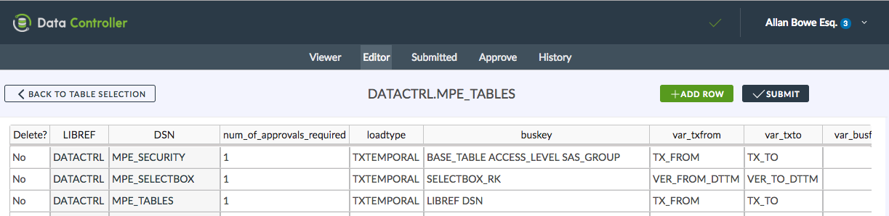

Data Controller for SAS® - Adding Tables¶
Overview¶
Adding tables to the Data Controller is a matter of configuration, specifically the addition of a new record to the DATACTRL.MPE_TABLES table, and corresponding entries in the DATACTRL.MPE_SECURITY table.
Note
In order to surface the table to (non admin) users, appropriate groups should be configured as per security settings.

MPE_TABLES Configuration Details¶
Each table to be edited in the Data Controller is represented by one record in DATACTRL.MPE_TABLES. The fields should be populated as follows:
LIBREF¶
The libref of the table. If not pre-assigned, and the serverType is SAS 9 (EBI), DC will assign it at runtime using the first definition found in metadata, using this macro.
DSN¶
The dataset (table) name as visible when assigning a direct libref connection to LIBREF. If the target is a format catalog, it should have a "-FC" suffice (eg FORMATS-FC). More info on formats here.
NUM_OF_APPROVALS_REQUIRED¶
This is an integer representing the number of approvals required before a table is updated. This mechanism lets you insist on, for example, 2 or 3 approvals before sensitive data is updated following a submission. Note that only one rejection is ever necessary to remove the submission. This is a required field.
LOADTYPE¶
The loadtype determines the nature of the update to be applied. Valid values are as follows:
- FORMAT_CAT. For updating Format Catalogs, the BUSKEY should be
FMTNAME START. See formats. - UPDATE. This is the most basic type, and any updates will happen 'in place'. Simply provide the primary key fields in the
BUSKEYcolumn. - TXTEMPORAL. This signifies an SCD2 type load. For this type the validity fields (valid from, valid to) should be specified in the
VAR_TXFROMandVAR_TXTOfields. The table itself should includeVAR_TXFROMin the physical key. The remainder of the primary key fields (not includingVAR_TXFROM) should be specified inBUSKEY. - BITEMPORAL. These tables have two time dimensions - a version history, and a business history. The version history (SCD2) fields should be specified in
VAR_TXFROMandVAR_TXTOand the business history fields should be specified inVAR_BUSFROMandVAR_BUSTO. Both theVAR_TXFROMandVAR_BUSFROMfields should be in the physical key of the actual table, but should NOT be specified in theBUSKEYfield.
This is a required field.
Note
The support for BITEMPORAL loads is restricted, in the sense it is only possible to load data at a single point in time (no support for loading multiple business date ranges for a specific BUSKEY). The workaround is simply to load each date range separately. As a result of this restriction, the EDIT page will only show the latest business date range for each key. To modify earlier values, a filter should be applied.
BUSKEY¶
The business (natural) key of the table. For SCD2 / Bitemporal, this does NOT include the validity dates. For Retained / Surrogate key tables, this contains the actual surrogate key - the underlying fields that are used to create the surrogate key are specified in RK_UNDERLYING. This is a required field.
VAR_TXFROM / VAR_TXTO¶
The SCD2 type validity dates, representing the point in time at which the field was created (VAR_TXFROM) and when it was closed out (VAR_TXTO) from a change or deletion. If the record is active, the VAR_TXTO field would contain a high value. VAR_TXFROM is a part of the physical key of the underlying table.
These fields should contain the NAME of the variables which contain the open / close timestamps in the underlying table.
Leave blank if not required.
VAR_BUSFROM / VAR_BUSTO¶
The BITEMPORAL business dates which represent the reporting period to which the record is valid. Typically these contain date values (rather than datetime values). If variables are specified here, then the LOADTYPE should be BITEMPORAL.
Leave blank if not required.
VAR_PROCESSED¶
Set the name of a variable (eg processed_dttm) which should be given a current timestamp whenever the table is updated.
Leave blank if not required.
CLOSE_VARS¶
By default, the Data Controller will only process the records that are part of a changeset. This means that records should be explicity marked for deletion. But what if you are performing a reload of a monthly batch, and the absence of a record implies that it is no longer required? For this scenario, it is necessary to specify the range within a 'complete' load is expected. For instance, by reporting month, or month + product. When performing loads, the DC will then first extract a distinct list of values for this key and close them out in the target table, before performing the upload. The CLOSE_VARS are typically a subset of the BUSKEY fields.
Leave blank if not required.
PRE_EDIT_HOOK¶
Hook script to execute prior to an edit being made. This allows data to be modified before being presented for editing.
Leave blank if not required.
SAS Developer Notes:
- Target dataset:
work.OUT - Filters will have been applied, and table sorted on BUSKEY
- Base libref.table or catalog variable:
&orig_libds
POST_EDIT_HOOK¶
Hook script to execute after an edit has been made. Useful when there is a need to augment data, or perform advanced data quality checks prior to approval.
Leave blank if not required.
SAS Developer Notes:
- Target dataset:
work.STAGING_DS - Base libref.table or catalog variable:
&orig_libds
If your DQ check means that the program should not be submitted, then simply exit with &syscc > 4. You can even set a message to go back to the user by using the mp_abort macro:
%mp_abort(iftrue= (&syscc ne 0) /* if this condition is true, the process will exit */
,msg=%str(YOUR MESSAGE GOES HERE)
)
PRE_APPROVE_HOOK¶
Hook script to execute before the approval diff is generated. It can be used to modify the values presented to an approver on the approve screen. This can be helpful in order to present the data in way that can be easily consumed by approvers.
Leave blank if not required.
SAS Developer Notes:
- Target dataset:
work.STAGING_DS - Base libref.table or catalog variable:
&orig_libds
POST_APPROVE_HOOK¶
This hook script is %inc'd after an approval is made. This is the most common type of hook script, and is useful for, say, running a SAS job after a mapping table is updated, or running a model after changing a parameter.
Leave blank if not required.
SAS Developer Notes:
At the point of running this script, the data has already been loaded (successfully) to the target table. Therefore the target is typically the base libref.table (or format catalog) itself and can be referenced directly (YOURLIB.YOURDATASET), or using either of the following macro variable:
&orig_libds&libref..&ds
The staged table is also available, as work.STAGING_DS.
If you are making changes to the target table as part of the hook, then in order to prevent contention from other users making concurrent edits, you are advised to "LOCK" and "UNLOCK" it using the mp_lockanytable macro:
/* lock SOMELIB.SOMETABLE */
%mp_lockanytable(LOCK,
lib=SOMELIB,
ds=SOMETABLE,
ref=Locking table to peform a post approve hook action
ctl_ds=&mpelib..mpe_lockanytable
)
/* do stuff */
proc sort data=somelib.sometable;
run;
/* unlock */
%mp_lockanytable(UNLOCK,
lib=SOMELIB,
ds=SOMETABLE,
ctl_ds=&mpelib..mpe_lockanytable
)
SIGNOFF_COLS¶
Used to determine a range (eg reporting month) to which a 'final version' can be marked. This allows a particular version of data to be marked as final, meaning that the data can continue to change afterwards (reports can simply query for the timestamp of the 'final' version of the data). Leave blank if not required.
SIGNOFF_HOOK¶
This hook script is %inc'd after a 'final version' has been signed off.
Leave blank if not required.
NOTES¶
Content entered here will be displayed to the approver on signoff. Not required, but recommended.
RK_UNDERLYING¶
For retained / surrogate keys, an auto-incrementing field is used to represent each unique record. In this case, the RK (integer) field itself should be added in the BUSKEY column, and the natural / underlying key should be added here. Leave blank unless using retained / surrogate keys.
AUDIT_LIBDS¶
If this field is blank (ie empty, missing), every change is captured in the MPE_AUDIT. This can result in large data volumes for frequently changing tables.
Alternative options are:
- Enter a zero (
0) to switch off audit logging completely - Enter a library.dataset reference of an alternative audit table in which to capture the change history.
For option 2, the base table structure can be generated using this macro: https://core.sasjs.io/mddl__dc__difftable_8sas_source.html.
HOOK Scripts¶
Data Controller allows SAS programs to be executed at certain points in the ingestion lifecycle, such as:
- Before an edit (to control the edit screen)
- After an edit (perform complex data quality)
- Before an approval (control the approve screen)
- After an approval (trigger downstream jobs with new data)
The code is simply %include'd at the relevant point during backend execution. The program may be:
- Physical, ie the full path to a
.sasprogram on the physical server directory - Logical, ie a Viya Job (SAS Drive), SAS 9 Stored Process (Metadata Folder) or SASJS Stored Program (SASjs Drive).
If the entry ends in ".sas" it is assumed to be a physical, filesystem file. Otherwise, the source code is extracted from SAS Drive or Metadata.
To illustrate:
- Physical filesystem (ends in .sas):
/opt/sas/code/myprogram.sas - Logical filesystem:
/Shared Data/stored_processes/mydatavalidator